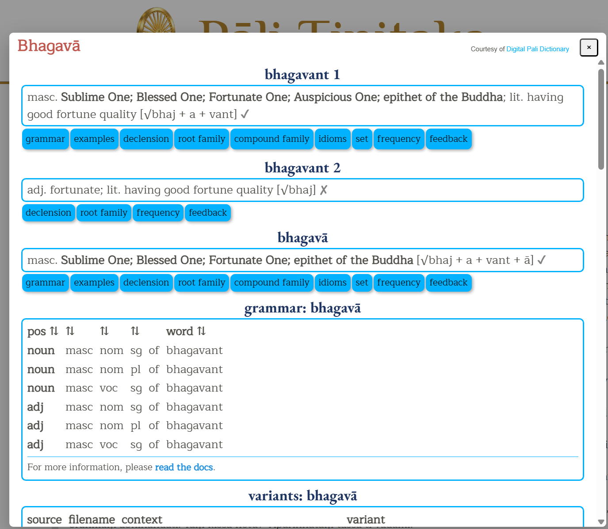
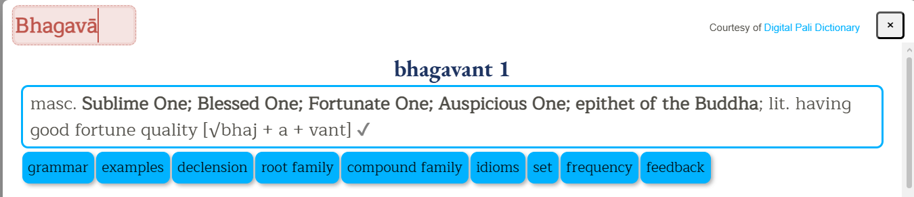
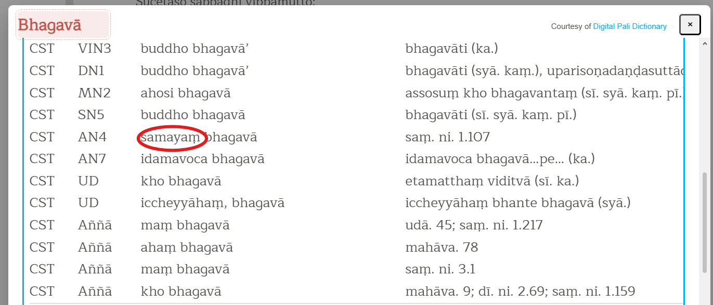
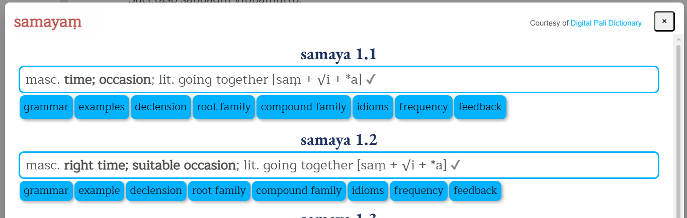

This section contains the following:
You can look up the meaning of a particular Pali word on any script by simply double-clicking it. The English translation (along with all associated information) of the selected word will be shown in a pop-up window (see example below).

When viewing the dictionary meaning, it is possible to amend the searched word by clicking on the word and edit the word to trigger a new search

Furthermore, double-clicking on any word in the list of results will trigger a new search for that word, e.g. double-clicking on the word 'samayam'...

...will trigger a new search for that word.

Vipassana Research Institute. (n.d.). Brahmajālasuttaṃ (Dīghanikāya, Sīlakkhandhavagga). In Chaṭṭha Saṅgāyana Tipiṭaka. Retrieved July 9, 2026, from https://tipitaka.org/romn/#67
"Brahmajālasuttaṃ." Chaṭṭha Saṅgāyana Tipiṭaka, Vipassana Research Institute, https://tipitaka.org/romn/#67. Accessed 9 July 2026.
"Brahmajālasuttaṃ." In Dīghanikāya, Chaṭṭha Saṅgāyana Tipiṭaka edition. Vipassana Research Institute. Accessed July 9, 2026. https://tipitaka.org/romn/#67.
Cyrillic - Please download and install the Doulos SIL font
Devanagari - Please download and install the CDAC-Surekh font
Khmer - Please download and install the Khmer Unicode Pack font
Myanmar - Please download and install the Padauk font
Sinhala - Please download and install these fonts: UN-Abhaya (normal), UN-Abhaya (bold) and UN-Samantha
Tibetan - Please install the Tibetan Machine Uni font
Click on the script of your choice from the Script menu. A new page showing the Tipitaka main collections will be shown on the left panel.
Click on any folder in the left panel and the Tree will open up showing links to Books. Click further to navigate into each book, chapter and section.
When you click on the selected Section, that page will open in the right panel.
Text in [ Blue color fonts] indicates a foot note
Text in Bold indicates cross referencing in Atthakathas or Tikas or Anya with the Mul or otherwise
The following abbreviations are used to refer to different versions of the Tipitaka:
References to other Tipitaka versions are most often used where there are "variant readings", that is, where the text differs between versions. In the example below, the Sri Lankan, Thai and PTS editions have "vāssa" instead of "vā assa".
The following abbreviations are used within variant readings to refer to books of the Tipitaka or commentaries.